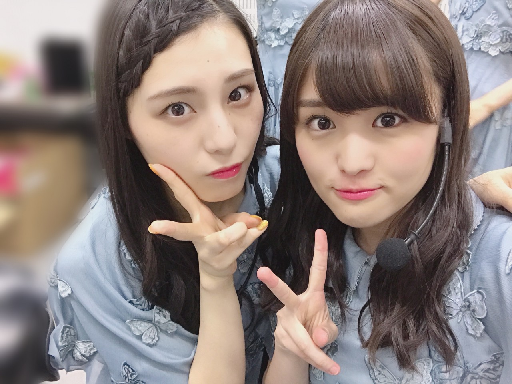
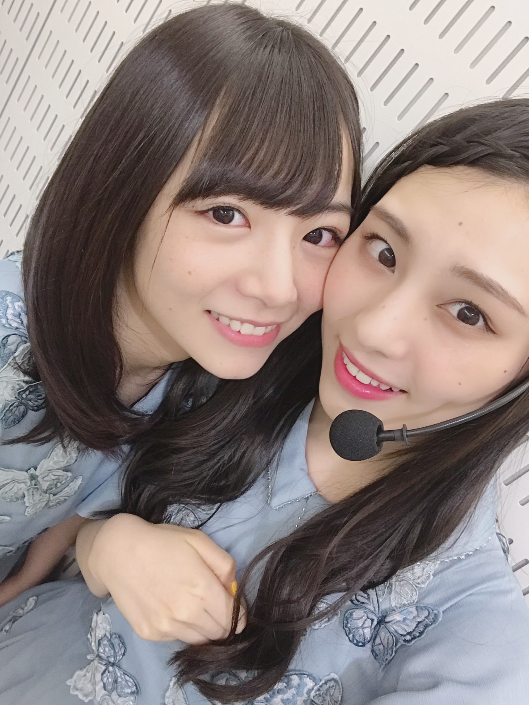
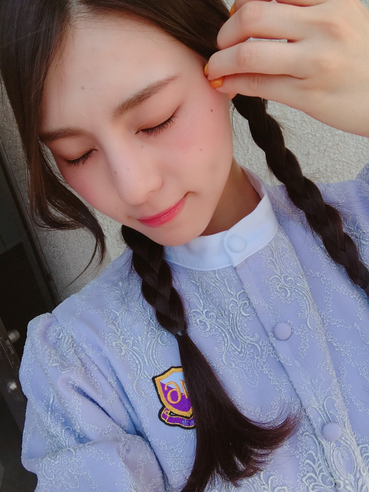
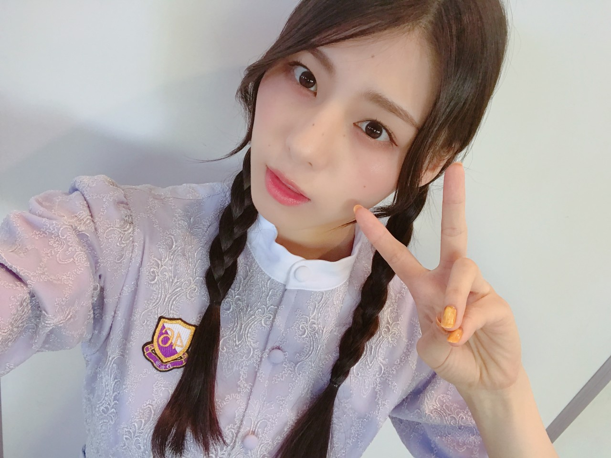
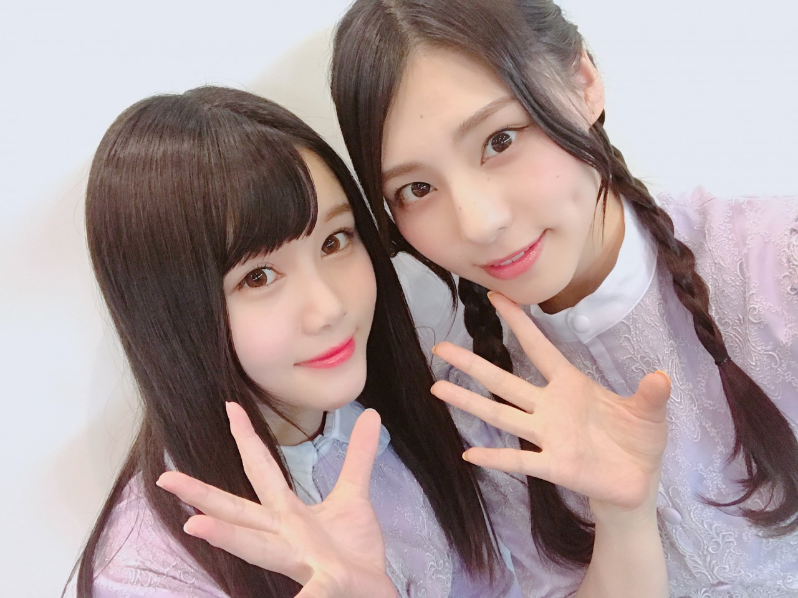

| 2018/05 14 Mon | となりで笑って_(．．*)vol.234 |
みなさんこんにちは
相楽伊織です





Mステ全員出演
本当に本当に嬉しかったなー(^^)
Mステには何度か
出させてもらったことはあったけど
今までとはまた違う気持ちでした！
すごく楽しかった(^-^)/
そしてこの前の全握！
この制服の髪型は基本的に
三つ編みがいいなと思ったので
ちょくちょく三つ編みの写真載せます∞(･×･)∞
ペアは理々杏とー！
20枚目最後の全握を
楽しく終えられて良かったです(^^)
りりあファンの皆さん
ありがとうございました！
スカウトマンもフルで披露するのは
これが最後なのかな。
聴いてるとハマるって言ってくださる方多くて
嬉しい、私もこの曲好きだから♪
かりんちゃんのブログに
歌唱メンバーの10人で撮った写真載ってるので
見てみてね(^-^)/
明日から
とうとう始まります！
アンダーライブ~中部シリーズ~
今までのアンダーライブとは違うけど
今まで作ってきたものを
崩すような事はしたくないので
最後まで頑張ります(^^)！
楽しみだなーーっ。
アンダーメンバー全員揃わなかったけど
16人で素敵なライブにしたいな(^^)
見所はたくさんあるよ！
来てくれる方も
今回来られない方も
応援よろしくお願いしますヽ(*^^*)ノ
サイリウムカラーは
黄緑×オレンジ です！
i o r i .

コメント(247)
2018/05/14 15:15